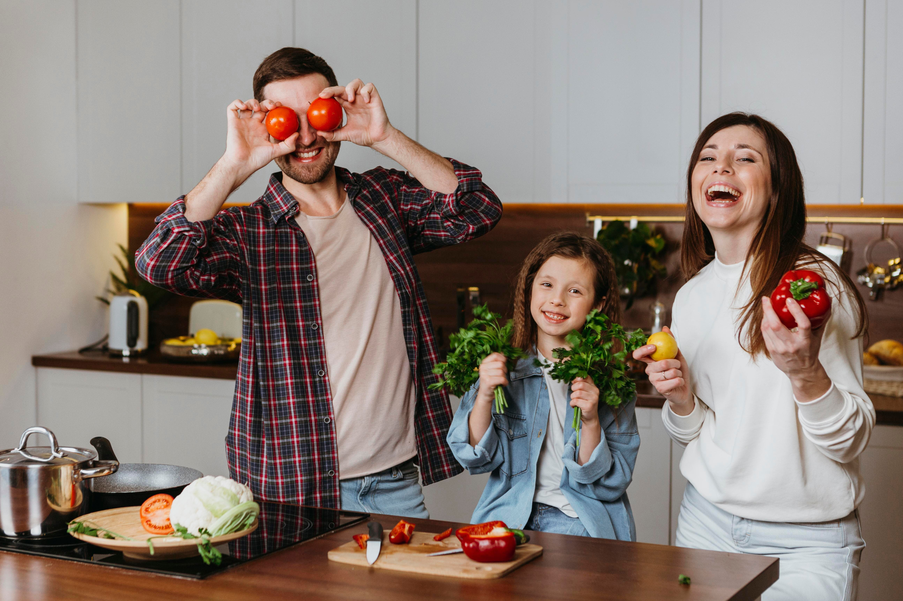
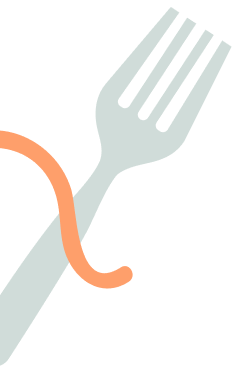

Our mission
Help more people cook nourishing meals, more often.
Healthy Recipe Finder was created to prove that healthy eating can be convenient, affordable, and genuinely delicious.
We showcase quick, whole-food dishes that anyone can master—no fancy equipment, no ultra-processed shortcuts—just honest ingredients and straightforward steps.

Why we exist

Cut through the noise.
The internet is bursting with recipes, yet most busy cooks still default to take-away or packaged foods. We curate a tight collection of fool-proof dishes so you can skip the scrolling and start cooking.
Cut through the noise.
The internet is bursting with recipes, yet most busy cooks still default to take-away or packaged foods. We curate a tight collection of fool-proof dishes so you can skip the scrolling and start cooking.
Cut through the noise.
The internet is bursting with recipes, yet most busy cooks still default to take-away or packaged foods. We curate a tight collection of fool-proof dishes so you can skip the scrolling and start cooking.
Our food
philosophy
Whole ingredients first.
Fresh produce, grains, legumes, herbs, and quality fats form the backbone of every recipe.
Flavor without compromise.
Spices, citrus, and natural sweetness replace excess salt, sugar, and additives.
Respect for time.
Weeknight meals should slot into real schedules; weekend cooking can be leisurely but never wasteful.
Sustainable choices.
Short ingredient lists cut down on food waste and carbon footprint, while plant-forward dishes keep things planet-friendly.
Beyond the plate
We believe food is a catalyst for community and well-being. By sharing approachable recipes, we hope to:
- Encourage family dinners and social cooking.
- Reduce reliance on single-use packaging and delivery waste.
- Spark curiosity about seasonal produce and local agriculture.


Ready to cook smarter?
Hit the button, pick a recipe, and get dinner on the table—fast.